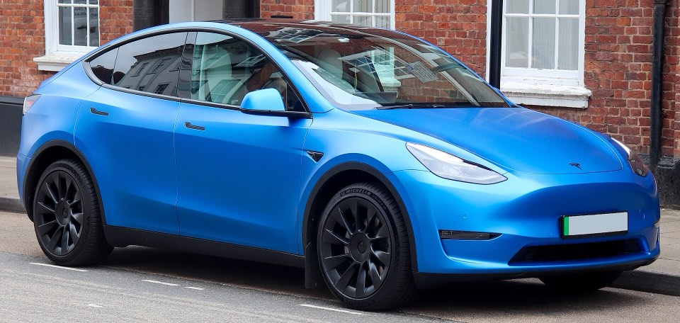

HW3 + HW4 · OWNER’S GUIDE
Tesla用アクセサリーは、車名より世代と寸法で選ぶ。
Spigen公式を入口に、収納・画面保護・充電まわりを紹介。実車適合と国内購入条件を確認し、未使用品をレビュー済みとは書かない。

Darin Caggiano / Wikimedia Commons · CC BY-SA 4.0 · 縮小版。表示枠に合わせたトリミングあり。
最初に検討しやすいもの
Spigen公式のTeslaカテゴリにはコンソール収納、反射防止の画面保護、充電アダプター収納などがあります。まずは不便に感じている箇所を一つ選び、取り付け寸法と車内操作の邪魔にならないかで比較します。本誌はこれらを実機評価していません。
2026年Model 3は画面寸法にも注意
Model 3/Yの旧型・刷新型、Performance、Y Lで形状や対応商品が変わります。さらに最新改良車は画面仕様にも変更があるため、年式だけで商品を選ばず実車の寸法とメーカー適合表を照合します。右ハンドル・左ハンドルの違いも確認してください。
| 用途 | メーカー公式で探す種類 | 照合する点 |
|---|---|---|
| 収納 | コンソールオーガナイザー | 旧型/Highland/Juniper/Y L・ハンドル位置 |
| 画面保護 | GLAS.tRなど反射防止製品 | 実際の画面寸法・前後画面の区別 |
| 充電用品の整理 | アダプター用ケース・収納 | 対象アダプターの形状と世代 |
海外の価格を日本の支払額にしない
メーカー米国サイトの米ドル価格だけで割安とは判断しません。送料、税、通関、返品条件、日本への配送可否や正規保証を確認します。日次の更新は商品ページの変化・新着報道への入口で、在庫や最安値を保証するものではありません。
購入候補と安全性の確認
収納トレーは操作やエアバッグ展開への干渉、フロアマットはペダルへの干渉、画面保護は反射と操作性を確認します。カメラや安全関連センサーを覆う用品、充電・高電圧系に介在する製品は、単なる装飾品と同じ基準で勧めません。広告・アフィリエイトは現在ありません。

Vauxford / Wikimedia Commons · CC BY-SA 4.0 · 縮小版。表示枠に合わせたトリミングあり。